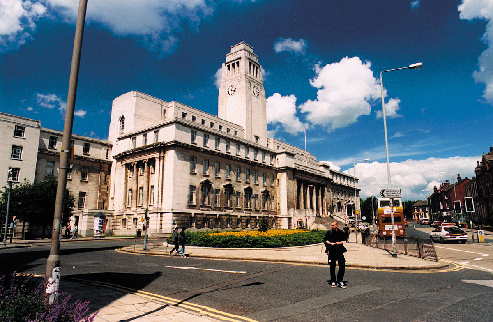

Student Guide to Leeds

Thinking of starting your studies in Leeds? Already a student in Leeds, and wondering where to start exploring this vibrant city? This website is your saviour. Two former sociology students are sharing you with their insight, to make sure you get the best student experience possible: for studying, partying, and anything culturally enriching!


Who are we?
We are two sociology graduates who have enjoyed three full years of fun and festivities at University of Leeds. Sophia spent her year on exchange in Melbourne, and Jess spent hers in Rotterdam. We're both originally from Manchester and met at college. This is our first time creating our own website - so be kind!